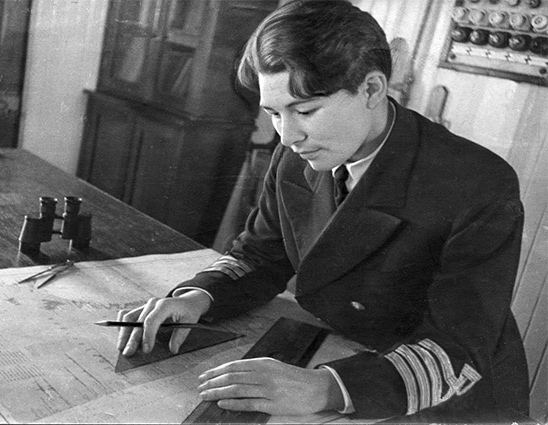
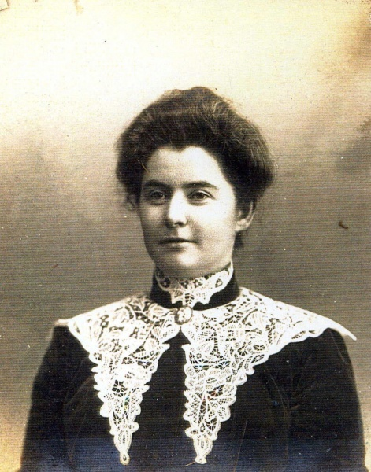
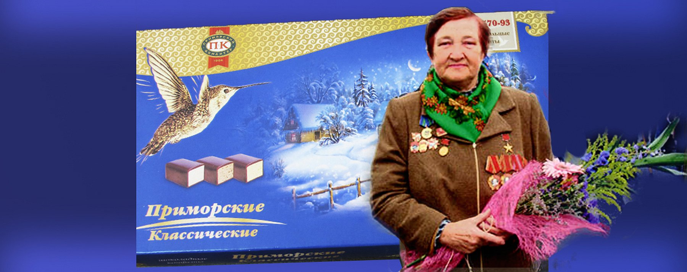
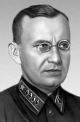

Важные личности
Щетинина Анна Ивановна
(13 февраля 1908, ст. Океанская — 25 сентября 1999, Владивосток) — первая в мире женщина — капитан дальнего плавания.
Родилась 13 февраля 1908 года на станции Океанской под Владивостоком.
После окончания техникума в 1929 году работала на Камчатке, где прошла путь от матроса 1 класса до капитана. В возрасте 24 лет Анна получила штурманский диплом, а 25 января 1934 года — диплом капитана дальнего плавания. Своим первым рейсом в 1935 году она прославилась на весь мир, проведя грузовой пароход «Чавыча» из Гамбурга через Одессу и Сингапур в Петропавловск-Камчатский. 20 марта 1938 года Анна Ивановна была назначена первым начальником рыбного порта города Владивостока. Войну Анна встретила на Балтике, где под бомбёжками эвакуировала население Таллина и перевозила стратегические грузы.
В августе 1945 года участвовала в переброске 264-й стрелковой дивизии на южный Сахалин.
После войны Анна Щетинина была капитаном судов «Аскольд», «Баскунчак», «Белоостров», «Днестр», «Псков», «Менделеев» в Балтийском пароходстве. С 1949 года работала в Ленинградском высшем инженерном морском училище, с 1951 года — старший преподаватель, а затем и декан судоводительского факультета училища. В 1956 году Анне Щетининой присвоено звание доцента. В 1960 году она была переведена в ВВИМУ на должность доцента кафедры «Морское дело».
В 1964—1970 годах была председателем Приморского филиала Географического общества СССР. Автор книги «На морях и за морями…» (1968). Вышла на пенсию в 1983 году. Умерла 25 сентября 1999 года.
Прей Элеонора
Элеанора Лорд Прей (англ. Roxana Eleanor Lord Pray; 1868—1954) — знаменита своими письмами из Владивостока, в которых она широко описывала все события, происходившие в городе во время её проживания там, а также тем, что сделала множество фотографий г. Владивостока и его пригородов того времени.
В апреле 1894 года, сразу после брака с Фредериком Преем, с которым они вместе учились в школе, по предложению Чарльза Смита (1834-1898), женатого на сестре Фредерика - Саре Элизабет (1858-1942) и владеющего во Владивостоке "Американским магазином", Элеанора с мужем пересекли северо-американский континент в западном направлении, сели в Сан-Франциско на пароход до Японии и к лету того же года добрались до Владивостока. Живя здесь, Элеанора отправляла письма своим знакомым в разные страны мира. Впоследствии часть этих писем была собрана и напечатана для широкой публики в целом ряде изданий, начиная с книги «Письма из Владивостока» (под редакцией Биргитты Ингемансон).
Россия переживала сложные годы в начале XX века. Элеонора была свидетельницей развития Русско-японской войны, Первой мировой войны, революции и интервенции. Но даже в такое непростое время владивостокская американка не была разочарована своею жизнью в России и продолжала любить свою новую родину. Во время Первой мировой войны и после нее торговля в "американском магазине" шла плохо. К 1918 году Фредерик вынужден был закрыть магазин и устроился на работу в американское консульство во Владивостоке, где к 1923 году дослужился до вицеконсула. В это же время Элеанора принимала участие в работе отделения американского Красного креста во Владивостоке, а затем в подразделении Христианского союза молодых людей.
После скоропостижной смерти Фредерика в апреле 1923 года и отправки его тела на родину, Альфред Кунст предложил ей работу переводчицы и кассира в знаменитом торговом доме «Кунст и Альберс», куда она была принята с июня 1923 года. Эта работа ей очень нравилась и позволила отвлечься от горя, связанного с потерей мужа. Летом 1930 года, по причине закрытия компании и потери работы, Элеанора осталась без заработка. Выплат в связи с увольнением ей хватило на жизнь до декабря, когда она и уехала навсегда из Владивостока, в котором прожила 36 лет. Она отправилась к дочери и золовке в Шанхай. Во время оккупации Китая японцами Элеонора попала в лагерь для интернированных лиц, а после освобождения в 1943 году уехала в США. Умерла в 1954 году в Вашингтоне. Похоронена по месту рождения своего мужа, Фредерика Прея (1867-1923), рядом с его могилой, на кладбище Форест Глейд, вблизи городка Сомерсворт, штат Нью-Гемпшир.
Чулкова Анна Фёдоровна
А́нна Фёдоровна Чулко́ва (22 февраля 1934, Тарадеи, Московская область — 24 апреля 2020, Владивосток, Приморский край, Россия) — советский и российский технолог-кондитер Владивостокской кондитерской фабрики, мастер высшего класса кондитерского производства РСФСР, Герой Социалистического Труда и лауреат Государственной премии СССР, почётный гражданин Владивостока.
Автор рецепта и технологии изготовления конфет «Птичье молоко», послуживших образцом для других советских кондитерских предприятий. Кроме того, создала конфеты «Золотой Рог», за которые получила бронзовую медаль ВДНХ, конфеты «Комета», «Метеорит», шоколадно-вафельный торт «Мечта» — всего около ста наименований кондитерских изделий. Кавалер двух орденов Ленина и ордена Октябрьской Революции. Занесена в Золотую книгу Почёта Министерства пищевой промышленности РСФСР и в книгу Трудовой славы СССР.
Уборевич Иероним Петрович
Иерони́м Петро́вич Уборе́вич (лит. Jeronimas Uborevičius; 2 января 1896, д. Антандрия Ковенской губернии — 12 июня 1937, Москва) — советский военный и политический деятель, командарм 1-го ранга (1935). Расстрелян по «делу Тухачевского» (1937). Посмертно реабилитирован в 1957.
В августе 1921 — августе 1922 годов — командующий 5-й Отдельной армией и войсками Восточно-Сибирского военного округа. С 17 августа 1922 года председатель Военного Совета, военный министр Дальневосточной Республики и главнокомандующий Народно-революционной армии и флота ДВР. Под его командованием НРА 9 октября взяла штурмом Спасский укреплённый район и 25 октября вошла во Владивосток. 22 ноября 1922 года с упразднением ДВР НРА была переименована в 5-ю Краснознамённую армию, а Уборевич назначен её командармом (до июня 1924 года).